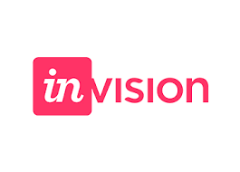

Work Remotely
Gaps English Presentation
https://fgriberi.github.io/work-remotelyCreated by Franco G. Riberi.
What does say about me?
Just in case ...
!=
What doesn't say about me?
I love travelling.I love knowing new cultures.I’m a trekking enthusiast.I like to face New Challenges.I enjoy resolving problems.I’m a software developer.Overview
- What is "work remotely"?
- Advantages & Disadvantages
- My personal experience
- Summary
FAQ
- Can I ask questions any time?
Sure. - Do I need to note everything down?
No. The presentation is already online. Relax.
https://fgriberi.github.io/work-remotely
What is "work remotely"?
“... when people working for a company work from their homes, using a computer which is connected to the computer system in an office ...”


Advantages & Disadvantages
The Pros (+)
+ Working from anywhere and any time+ No daily commute+ Flexibility+ Less costly+ Better health+ Less interruptionsThe Cons (-)
- Lack of routine- No workplace social life- The challenge of the work/life balance- Blurred lines.- Distractions- Overlooked for promotions- Complete dependence on technologyPersonal Experience
I'm working as a remote developerWhy did I choose this path?Summary
* Be self-discipline* Find your gold hours to work* Communication is so important* Schedule your day* Make regular 1on1 meeting